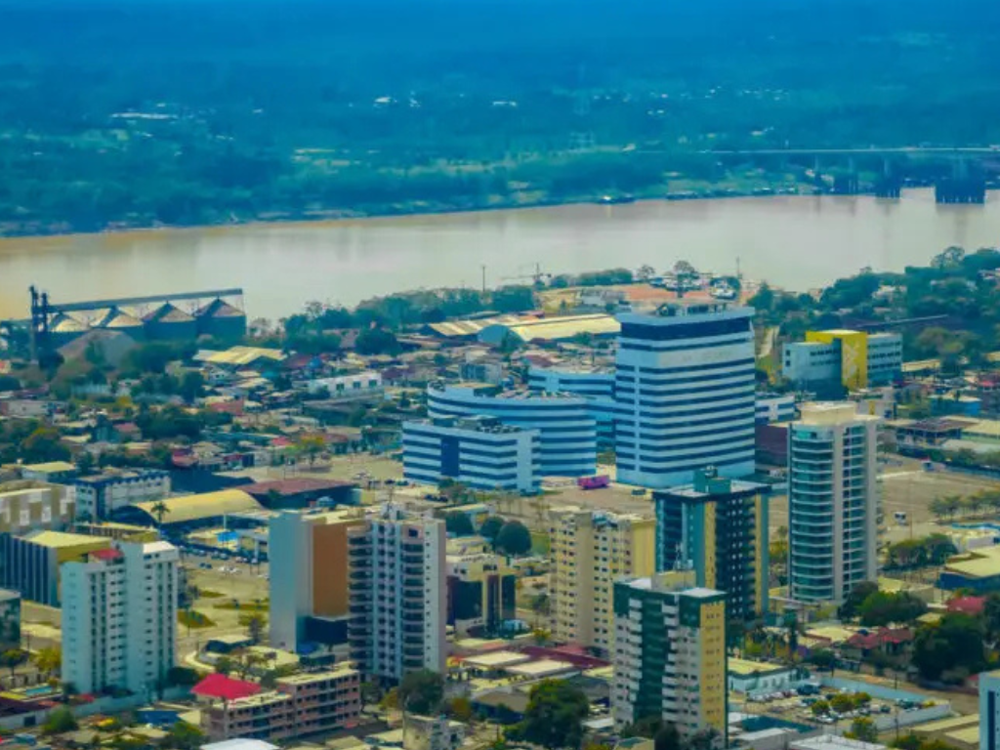

O Rondônia é um estado localizado na região Norte do Brasil, conhecido por sua diversidade natural, riqueza cultural e importância econômica para a Amazônia brasileira. Grande parte de seu território é coberta pela Floresta Amazônica, abrigando uma rica fauna e flora. Sua capital, Porto Velho, é um importante centro urbano e histórico da região, ligado ao desenvolvimento da antiga Estrada de Ferro Madeira-Mamoré. A economia de Rondônia é baseada principalmente na agropecuária, agricultura, produção de energia hidrelétrica e extrativismo. Além disso, o estado possui forte influência das culturas indígenas e dos migrantes de várias partes do Brasil, formando uma identidade cultural diversificada e marcada pelas tradições amazônicas.
